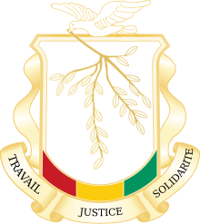

Economy of Guinea
|  | |
| Currency | Franc (GNF) |
|---|---|
| Calendar year | |
Trade organisations | AU, WTO |
| Statistics | |
| GDP | |
GDP growth |
|
GDP per capita | |
| 9.826% (2018)[1] | |
All values, unless otherwise stated, are in US dollars. | |
{kind=link}
The economy of Guinea is dependent largely on agriculture and other rural activities.[5] Guinea is richly endowed with good minerals, possessing an estimated quarter of the world's proven reserves of bauxite,[6] more than 1.8 billion tonnes (2.0 billion short tons) of high-grade iron ore, significant diamond and gold deposits, and undetermined quantities of uranium. In 2021, Guinea was the world's biggest exporter of Aluminium Ore ($3.2B/ Gold $5.5B) 2021 trade surplus was $4.3B.
Guinea also has considerable potential for growth in the agricultural and fishing sectors. Land, water, and climatic conditions provide opportunities for large-scale irrigated farming and agroindustry. Remittances from Guineans living and working abroad and coffee exports account for the rest of Guinea's foreign exchanges industry.
Economic history
[edit]{kind=link}
Guinea was part of the franc zone countries that included most of the former French Colonies. After Independence, these countries did not become completely economical free. France decided against monetary autonomy hence they could not use a freely convertible currency. The state intervention of the new governments was characterized by stops of quotas on imports and internal price controls. In the time up to c. 1980, the franc-zone countries had on average a lower inflation and a higher economic growth compared to the Anglophone counterparts, who could use their own currencies. But regarding the time after c. 1980 and the economic liberalism, characterized by Structural Adjustments, the franc zone countries could not outperform the rest.[7]
Since 1985, the Guinean Government has adopted policies to return commercial activity to the private sector, promote investment, reduce the role of the state in the economy, and improve the administrative and judicial framework. The government has eliminated restrictions on agricultural enterprise and foreign trade, liquidated many parastatals, increased spending on education, and vastly downsized the civil service. The government also has made major strides in restructuring the public finances.
The IMF and the World Bank are heavily involved in the development of Guinea's economy, as are many bilateral donor nations, including the United States. Guinea's economic reforms have had recent notable success, improving the rate of economic growth to 5% and reducing the rate of inflation to about 99%, as well as increasing government revenues while restraining official expenditures. Although Guinea's external debt burden remains high, the country is now current on external debt payments.
Current GDP per capita of Guinea shrank by 16% in the 1990s.
The government revised the private investment code in 1998 to stimulate economic activity in the spirit of a free enterprise. The code does not discriminate between foreigners and nationals and provides for repatriation of profits. Foreign investments outside Conakry are entitled to especially favorable conditions. A national investment commission has been formed to review all investment proposals. The United States and Guinea have signed an investment guarantee agreement that offers political risk insurance to American investors through OPIC. Guinea plans to inaugurate an arbitration court system to allow for the quick resolution of commercial disputes.
Mean wages were $0.45 per man-hour in 2009.
In 2002, the IMF suspended Guinea's Poverty Reduction and Growth Facility (PRGF) because the government failed to meet key performance criteria. In reviews of the PRGF, the World Bank noted that Guinea had met its spending goals in targeted social priority sectors. However, spending in other areas, primarily defense, contributed to a significant fiscal deficit.[8] The loss of IMF funds forced the government to finance its debts through central bank advances. The pursuit of unsound economic policies has resulted in imbalances that are proving hard to correct.
Under then-Prime Minister Diallo, the government began a rigorous reform agenda in December 2004 designed to return Guinea to a PRGF with the IMF. Exchange rates have been allowed to float, price controls on gasoline have been loosened, and government spending has been reduced while tax collection has been improved. These reforms have not reduced inflation, which hit 27% in 2004 and 30% in 2005. Currency depreciation is also a concern. The Guinea franc was trading at 2550 to the dollar in January 2005. It hit 5554 to the dollar by October 2006. In August 2016 that number had reached 9089.
Despite the opening in 2005 of a new road connecting Guinea and Mali, most major roadways remain in poor repair, slowing the delivery of goods to local markets. Electricity and water shortages are frequent and sustained, and many businesses are forced to use expensive power generators and fuel to stay open.
Even though there are many problems plaguing Guinea's economy, not all foreign investors are reluctant to come to Guinea. Global Alumina's proposed alumina refinery has a price tag above $2 billion. Alcoa and Alcan are proposing a slightly smaller refinery worth about $1.5 billion. Taken together, they represent the largest private investment in sub-Saharan Africa since the Chad-Cameroon oil pipeline. Also, Hyperdynamics Corporation, an American oil company, signed an agreement in 2006 to develop Guinea's offshore Senegal Basin oil deposits in a concession of 80,000 square kilometres (31,000 sq mi); it is pursuing seismic exploration.[9]
On 13 October 2009, Guinean Mines Minister Mahmoud Thiam announced that the China International Fund would invest more than $7bn (£4.5bn) in infrastructure. In return, he said the firm would be a "strategic partner" in all mining projects in the mineral-rich nation. He said the firm would help build ports, railway lines, power plants, low-cost housing and even a new administrative centre in the capital, Conakry.[10] In September 2011, Mohamed Lamine Fofana, the Mines Minister following the 2010 election, said that the government had overturned the agreement by the ex-military junta.[11]
Youth unemployment remains a large problem. Guinea needs an adequate policy to address the concerns of urban youth. One problem is the disparity between their life and what they see on television. For youth who cannot find jobs, seeing the economic power and consumerism of richer countries only serves to frustrate them further.[12]
Economic sectors
[edit]Mining
[edit]In 2019, the country was the world's 3rd largest producer of bauxite.[13]
Bauxite mining and alumina production provide about 80% of Guinea's foreign exchange. Several U.S. companies are active in this sector. Diamonds and gold also are mined and exported on a large scale, providing additional foreign exchange. Concession agreements have been signed for future exploitation of Guinea's extensive iron ore deposits.
Guinea is richly endowed with minerals, possessing an estimated one-third of the world's proven reserves of bauxite, more than 1.8 billion metric tons (MT) (2.0 billion short tons) of high-grade iron ore, significant diamond and gold deposits, and undetermined quantities of uranium.
Lately, with the increase of alumina demand from the booming economy of China, there is a renew interest in Guinea riches. The consortium Alcan and Alcoa, partner with the Guinean government in the CBG mining in north western Guinea, have announced the feasibility study for the construction of a 1 million TPa alumina smelter. This comes with a similar project from Canadian start-up Global Alumina trying to come with a 2 billion dollar alumina plant in the same region. As of April 2005, the National Assembly of Guinea has not ratified Global's project.
Revenue from bauxite mining is expected to fall significantly in 2010 due mainly to the world economic situation.[14]
Mining controversies
[edit]Guinea has large reserves of the steel-making raw material, iron ore. Rio Tinto Group was the majority owner of the $6 billion Simandou iron ore project, which it had called the world's best unexploited resource. This project is said to be of the same magnitude as the Pilbara in Western Australia.[15]
In 2017, Och-Ziff Capital Management Group pled guilty to a multi-year bribery scheme, after an investigation by the Securities and Exchange Commission (SEC) led to a trial in the United States and a fine of $412 million.[16] Following this, the SEC also filed a lawsuit in the US against head of Och-Ziff European operations, Michael Cohen,[17][18] for his role in a bribery scheme in the region.[19][20]
In 2009 the government of Guinea gave the northern half of Simandou to BSGR[21] for an $165 million investment in the project and a pledge to spend $1 billion on railways, saying that Rio Tinto wasn't moving into production fast enough. The US Justice Department investigated allegations that BSGR had bribed President Conté's wife to get him the concession,[22] and so did the Federal Bureau of Investigation, the next elected President of Guinea, Alpha Condé, and an assortment of other national and international entities.
In April 2014 the Guinean government cancelled the company's mining rights in Simandou. BSGR has denied any wrongdoing, and in May 2014 sought arbitration over the government of Guinea's decision to expropriate its mining rights.[23] In February 2019, BSGR and Guinean President Alpha Condé agreed to drop all allegations of wrongdoing as well as the pending arbitration case.[24] Under the agreement, BSGR would relinquish rights to Simandou while being allowed to maintain an interest in the smaller Zogota deposit that would be developed by Niron Metals head Mick Davis.[25][26]
In 2010 Rio Tinto signed a binding agreement with Aluminum Corporation of China Limited to establish a joint venture for the Simandou iron ore project.[27] In November 2016, Rio Tinto admitted paying $10.5 million to a close adviser of President Alpha Condé to obtain rights on Simandou.[28] Conde said he knew nothing about the bribe and denied any wrongdoing. However, according to recordings obtained by FRANCE 24, Guinean authorities were aware of the Simandou briberies.[29]
In July 2017, the UK-based anti-fraud regulator, the Serious Fraud Office (SFO) and the Australian Federal Police[30] launched an investigation into Rio Tinto's business practices in Guinea.[31][32]
Further, In November 2016, the former mining minister of Guinea, Mahmoud Thiam, accused head of Rio Tinto's Guinea operation department of offering him a bribe in 2010 to regain Rio Tinto's control over half of the undeveloped Simandou project.
In September 2011, Guinea adopted a new mining code. The law set up a commission to review government deals struck during the chaotic days between the end of dictatorship in 2008 and Condé coming to power.[33]
In September 2015, the French Financial Public Prosecutor's Office launched an investigation into President Alpha Conde's son, Mohamed Alpha Condé.[34] He was charged with embezzlement of public funds and receiving financial and other benefits from French companies that were interested in the Guinean mining industry.[35][36]
In August 2016, son of a former Prime Minister of Gabon, who worked for Och-Ziff's Africa Management Ltd, a subsidiary of the U.S. hedge fund Och-Ziff, was arrested in the US and charged with bribing officials in Guinea, Chad and Niger on behalf of the company to secure mining concessions[37] and gain access to relevant confidential information.[38] The investigation also revealed that he was involved in rewriting Guinea's mining law during President Conde's rule.[39] In December 2016, the US Department of Justice announced that the man pleaded guilty to conspiring to make corrupt payments to government officials in Africa.[38]
According to a Global Witness report, Sable Mining sought iron ore explorations rights to Mount Nimba in Guinea by getting close to Conde towards the 2010 elections, backing his campaign for presidency and bribing his son.[40] These allegations have not been verified yet but in March 2016 Guinean authorities ordered an investigation into the matter.[41]
The Conde government investigated two other contracts as well, one which left Hyperdynamic with a third of Guinea's offshore lease allocations as well as Rusal's purchase of the Friguia Aluminum refinery, in which it said that Rusal greatly underpaid.[42]
Agriculture
[edit]Guinea also has considerable potential for growth in the agricultural and fishing sectors. Land, water, and climatic conditions provide opportunities for large-scale irrigated farming and agroindustry. Possibilities for investment and commercial activities exist in all these areas, but Guinea's poorly developed infrastructure continues to present obstacles to investment projects.
Energy
[edit]Three primary energy sources make up the energy mix in Guinea – biomass, oil and hydropower. With 78%, biomass (mostly charcoal) makes the largest contribution in primary energy consumption in Guinea. It is locally produced, while Guinea imports all petroleum products.
Communications
[edit]The people of Guinea are among the poorest in West Africa[43] and this reality is reflected in the development of the country's telecommunications environment. Radio is the most important source of information for the public in Guinea, and the only one to reach the entire country.
There is a single government-owned radio network, a growing number of private radio stations, and one government TV station. The fixed telephone system is inadequate, with just 18,000 lines to serve the country's 10.5 million inhabitants in 2012. The mobile cellular system is growing rapidly and had an estimated 4.8 million lines in 2012. Internet usage is very low, reaching just 1.5% of the population in 2012.
Economic statistics
[edit]The following table shows the main economic indicators in 1990–2017.[44]
| Year | GDP
(in bil. US$ PPP) |
GDP per capita
(in US$ PPP) |
GDP
(in bil. US$ nominal) |
GDP growth (real) |
Inflation (in Percent) |
Government debt (Percentage of GDP) |
|---|---|---|---|---|---|---|
| 1990 | 5.51 | 916 | 3.7 | 3.7% | 25.7% | 72% |
| 1995 | 7.53 | 961 | 5.1 | 5.1% | 5.6% | 67% |
| 2000 | 9.92 | 1,134 | 4.0 | 4.0% | 6.8% | 91% |
| 2005 | 12.96 | 1,354 | 4.5 | 4.5% | 31.4% | 98% |
| 2006 | 13.70 | 1,398 | 4.2 | 4.2% | 34.7% | 95% |
| 2007 | 14.98 | 1,490 | 6.3 | 6.3% | 22.9% | 61% |
| 2008 | 15.90 | 1,542 | 7.0 | 7.0% | 18.4% | 58% |
| 2009 | 15.78 | 1,489 | 6.8 | −0.6% | 4.7% | 61% |
| 2010 | 16.64 | 1,530 | 6.9 | 6.9% | 15.5% | 69% |
| 2011 | 17.94 | 1,607 | 6.8 | 6.0% | 21.4% | 58% |
| 2012 | 19.35 | 1,690 | 7.4 | 7.3% | 15.2% | 27% |
| 2013 | 20.44 | 1,740 | 8.4 | 8.4% | 11.9% | 34% |
| 2014 | 21.57 | 1,791 | 8.8 | 8.8% | 9.7% | 35% |
| 2015 | 22.57 | 1,828 | 8.8 | 8.8% | 8.2% | 42% |
| 2016 | 24.37 | 1,926 | 8.6 | 8.2% | 8.2% | 43% |
| 2017 | 26.47 | 2,041 | 10.3 | 9.7% | 8.9% | 40% |
{kind=link}
GDP: purchasing power parity – $26.5 billion (2017 est.)
GDP – real growth rate: 6.7% (2017 est.)
GDP – per capita: purchasing power parity – $2,000 (2017 est.)
GDP – composition by sector:
agriculture:
19.5%
industry:
38.4%
services:
42.1% (2017 est.)
Population below poverty line: 47% (2006 est.)
Household income or consumption by percentage share:
lowest 10%:
2.7% (2007)
highest 10%:
30.3% (2007)
Inflation rate (consumer prices): 8.9% (2017 est.)
Labor force: 5.558 million (2017)
Labor force – by occupation: agriculture 76%, industry and services 24% (2006 est.)
Unemployment rate: 2.8% (2017 est.)
Ease of Doing Business Rank 179th[45]
Budget:
revenues:
$382.7 million
expenditures:
$711.4 million, including capital expenditures of NA (2004 est.)
Industries: bauxite, gold, diamonds; alumina refining; light manufacturing and agricultural processing industries
Industrial production growth rate: 8% (2017 est.)
Electricity – production: 1 billion kWh (2015 est.)
Electricity – production by source:
fossil fuel:
63.55%
hydro:
36.45%
nuclear:
0%
other:
0% (1998)
Electricity – consumption: 930 million kWh (2015 est.)
Electricity – exports: 0 kWh (2016)
Electricity – imports: 0 kWh (2016)
Agriculture – products: rice, coffee, pineapples, palm kernels, cassava (tapioca), bananas, sweet potatoes; cattle, sheep, goats; timber
Exports: $2.115 billion (2017 est.)
Exports – commodities: bauxite, alumina, gold, diamonds, coffee, fish, agricultural products
Exports – partners: China 35.8%, Ghana 20.1%, UAE 11.6%, India 4.3% (2017)
Imports: $2.475 billion (2017 est.)
Imports – commodities: petroleum products, metals, machinery, transport equipment, textiles, grain and other foodstuffs (1997)
Imports – partners: Netherlands 17.2%, China 13.2%, India 11.8%, Belgium 10%, France 6.9%, UAE 4.5% (2017)
Debt – external: $1.53 billion (31 December 2017 est.)
Economic aid – recipient: $359.2 million (1998)
Currency: 1 Guinean franc (GNF) = 100 centimes
See also
[edit]- Trade unions in Guinea
- Central Bank of the Republic of Guinea
- Guinean franc
- United Nations Economic Commission for Africa
Further reading
[edit]- LaVarre Jr., William J. (August 1922). "Discovering Diamonds In British Guiana". The World's Work: A History of Our Time. XLIV: 425–433. Retrieved 4 August 2009.
References
[edit]- ^ a b c d e "World Economic Outlook Database, October 2019". IMF.org. International Monetary Fund. Retrieved 22 January 2020.
- ^ "Global Economic Prospects, January 2020 : Slow Growth, Policy Challenges" (PDF). openknowledge.worldbank.org. World Bank. p. 147. Retrieved 22 January 2020.
- ^ "Human Development Index (HDI)". hdr.undp.org. HDRO (Human Development Report Office) United Nations Development Programme. Retrieved 22 November 2022.
- ^ "Inequality-adjusted Human Development Index (IHDI)". hdr.undp.org. HDRO (Human Development Report Office) United Nations Development Programme. Retrieved 22 November 2022.
- ^ "Guinea". Retrieved 27 October 2019.
- ^ "Bauxite and alumina" (PDF), Mineral Resources Program, U.S. Geological Survey, January 2009, archived (PDF) from the original on 9 May 2009
- ^ Baten, Jörg (2016). A History of the Global Economy. From 1500 to the Present. Cambridge University Press. pp. 331–332. ISBN 9781107507180.
- ^ International Business Publications, USA (August 2013). Guinea Investment and Business Guide, Volume 1: Strategic and Practical Information. Lulu.com. p. 28. ISBN 9781438767710.
{{cite book}}:|last=has generic name (help) - ^ "Joint Venture Opportunity Offshore the West Coast of Africa" (PDF). Archived from the original (PDF) on 7 February 2009.Hyperdynamics Corporation (2008)
- ^ "Guinea confirms huge China deal". BBC News. London. 13 October 2009. Archived from the original on 15 October 2009. Retrieved 13 October 2009.
- ^ "Guinea mining: PM defends radical industry shake-up". BBC. 14 September 2011. Archived from the original on 27 October 2018. Retrieved 21 July 2018.
- ^ Joschka Philipps, "Explosive youth: Focus" Archived 26 May 2010 at the Wayback Machine, D+C (Development and Cooperation), funded by Germany's Federal Ministry for Economic Cooperation and Development,(2010/05) pages 190–193]. Inwent.org
- ^ USGS Bauxite Production Statistics
- ^ Mining Weekly, "Guinea bauxite income seen down 60% in 2010" 28 September 2009 (original source: Reuters)
- ^ "Mining Weekly – West Africa emerging as new Pilbara as miners race to develop iron-ore projects". Miningweekly.com. Archived from the original on 20 February 2017. Retrieved 19 February 2017.
- ^ "U.S. SEC charges two former Och-Ziff executives in bribery case". Reuters. 26 January 2017. Archived from the original on 8 February 2018. Retrieved 7 February 2018.
- ^ "Michael Cohen, Once of Och-Ziff, Charged With Fraud by U.S." Bloomberg L.P. 3 January 2018. Archived from the original on 24 January 2018. Retrieved 7 February 2018.
- ^ Moyer, Liz (3 January 2018). "Former Och Ziff hedge fund executive indicted for fraud in Africa investment scheme, prosecutor says". CNBC. Archived from the original on 7 February 2018. Retrieved 7 February 2018.
- ^ "Two Ex-Och-Ziff Executives Accused by SEC in Bribery Scheme". Bloomberg L.P. 26 January 2017. Archived from the original on 28 January 2017. Retrieved 7 February 2018.
- ^ GAN. "SEC charges two 'masterminds' behind Och-Ziff Africa bribe scheme". Archived from the original on 7 February 2018. Retrieved 7 February 2018.
- ^ KHADIJA SHARIFE. "Panama Papers: Steinmetz Guinea deal pried open: Leaked documents pry open the corporate structure of companies involved in a mining rights scandal in Guinea". Times Live. Archived from the original on 4 May 2016. Retrieved 25 August 2016.
- ^ Radden Keefe, Patrick (8 July 2013). "Buried Secrets: How an Israeli billionaire wrested control of one of Africa's biggest prizes". A Reporter at Large. The New Yorker. Retrieved 18 October 2020.
- ^ "UPDATE 2-BSGR starts arbitration against Guinea over lost mining rights". Reuters. 7 May 2017. Archived from the original on 12 October 2017. Retrieved 19 February 2017.
- ^ "Mining Billionaire Ends Bitter Guinea Dispute After Months of Secret Negotiations". Bloomberg L.P. 25 February 2019. Retrieved 13 August 2019.
- ^ "Israeli Billionaire Steinmetz's BSGR Settles Guinea Row, Looks to Zogota Iron Ore". Haaretz. 25 February 2019. Retrieved 13 August 2019.
- ^ Goodley, Simon (25 February 2019). "Beny Steinmetz settles dispute with Guinea over iron ore project". The Guardian. ISSN 0261-3077. Retrieved 13 August 2019.
- ^ "Chinalco, Rio Tinto And Russal Are Fighting Over Mining Rights And Power in Guinea". Business Insider. Archived from the original on 20 February 2017. Retrieved 19 February 2017.
- ^ Samb, Sonali Paul and Saliou. "Rio Tinto suspends senior executive after Guinea investigation". Reuters UK. Archived from the original on 20 February 2017. Retrieved 19 February 2017.
- ^ "Audio recordings drag Guinea president into mine bribery scandal – France 24". France 24. 1 December 2016. Archived from the original on 19 February 2017. Retrieved 19 February 2017.
- ^ AFP. "UK Serious Fraud Office probes Rio Tinto Guinea project". The Citizen. Archived from the original on 4 January 2018. Retrieved 3 January 2018.
- ^ Staff; Reuters (25 July 2017). "SFO says it is investigating Rio Tinto over Guinea operations". The Guardian. ISSN 0261-3077. Archived from the original on 19 February 2018. Retrieved 3 January 2018.
{{cite news}}:|last2=has generic name (help) - ^ "UK's SFO says opens investigation into Rio Tinto Group". Reuters. 24 July 2017. Archived from the original on 4 January 2018. Retrieved 3 January 2018.
- ^ Danny Fortson, "Secret deal threatens big miners" Archived 11 January 2014 at the Wayback Machine The Sunday Times (3 June 2012)]. Scribd.com (3 June 2012).
- ^ "French Justice investigating the lifestyle of the son of Guinean president". Ecofin Agency. Archived from the original on 20 February 2017. Retrieved 19 February 2017.
- ^ "Enquête sur le fils du président guinéen". Le Parisien. 19 February 2017. Archived from the original on 24 February 2017. Retrieved 19 February 2017.
- ^ ISSAfrica.org. "Another president's son caught with his hand in the cookie jar? – ISS Africa". ISS Africa. Archived from the original on 20 February 2017. Retrieved 19 February 2017.
- ^ Stevenson, Alexandra (16 August 2016). "Bribery Arrest May Expose African Mining Rights Scandal Tied to Och-Ziff". The New York Times. ISSN 0362-4331. Archived from the original on 17 December 2016. Retrieved 19 February 2017.
- ^ a b "Gabonese National Pleads Guilty to Foreign Bribery Scheme". Justice.gov. 9 December 2016. Archived from the original on 20 February 2017. Retrieved 19 February 2017.
- ^ "U.S. Case into Fixer for Och-Ziff Venture Gets Support in Guinea". Bloomberg L.P. 18 August 2016. Archived from the original on 20 February 2017. Retrieved 19 February 2017.
- ^ Witness, Global. "The Deceivers". Archived from the original on 20 February 2017. Retrieved 19 February 2017.
- ^ "Guinea: Sable Mining Bribery Under Probe". The NEWS (Monrovia). 23 May 2016. Archived from the original on 20 February 2017. Retrieved 19 February 2017.
- ^ "Guinea targets 3 firms in resource contract review – source". Creamer Media's Mining Weekly. Reuters. 9 November 2012. Archived from the original on 17 October 2016. Retrieved 25 August 2016.
- ^ "", BBC News, 14 March 2012. Retrieved 4 February 2014.
- ^ "Report for Selected Countries and Subjects". Retrieved 7 September 2018.
- ^ "Doing Business in Guinea 2012". World Bank. Retrieved 18 November 2011.
External links
[edit]- Economy of Guinea at Curlie
- (ECOWAS) Economic Community of West African States
- Guinea economic analysis.
- West African Agricultural Market Observer/Observatoire du Marché Agricole (RESIMAO), a project of the West-African Market Information Network (WAMIS-NET), provides live market and commodity prices from fifty seven regional and local public agricultural markets across Benin, Burkina Faso, Côte d'Ivoire, Guinea, Niger, Mali, Senegal, Togo, and Nigeria. Sixty commodities are tracked weekly. The project is run by the Benin Ministry of Agriculture, and a number of European, African, and United Nations agencies.
- Encyclopedia of the Nations article on "Guinea – Mining"
- Guinea latest trade data on ITC Trade Map